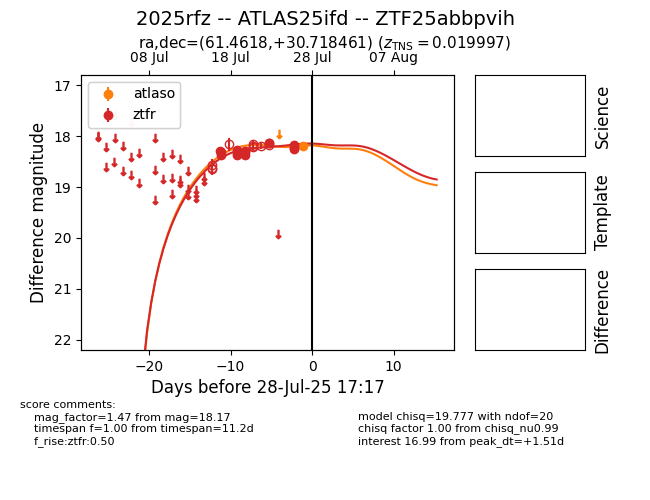

Target 2025rfz at 2025-08-09 00:06, see:
FINK: fink-portal.org/2025rfz
Lasair: lasair-ztf.lsst.ac.uk/objects/2025rfz
ALeRCE: alerce.online/object/2025rfz
TNS: wis-tns.org/object/2025rfz
YSE: ziggy.ucolick.org/yse/transient_detail/2025rfz
alt names
ZTF25abbpvih (ztf,fink)
2025rfz (tns,yse)
ATLAS25ifd (atlas)
coordinates:
equatorial (ra, dec) = (61.4618,+30.71846)
galactic (l, b) = (165.0263,-15.84455)
photometry
last atlaso=18.11, ztfr=18.17
2 atlaso, 13 ztfr detections
